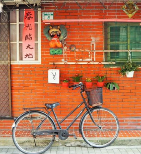
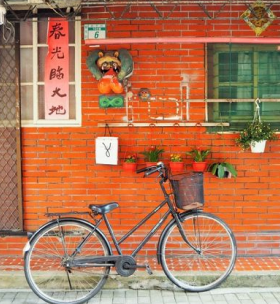

台湾の古都「台南」お寺などの史跡巡りや、リノベエリアの散策が楽しめる、新旧の魅力が交わる街です
安平老街
「台湾の京都」の異名を持つ古都・台南。かつて台湾の首都であったことから、重要な史跡が点在し、ノスタルジックなムードが漂っています。17世紀に作られた台湾最古の街は、現在、台湾レトロとも称されており、数々の掘り出し物やお土産、飲食店が立ち並びます。写真スポットとしても人気が高いエリアです。
露店めぐりは日中、ノスタルジックな撮影は夜がおすすめです


 
